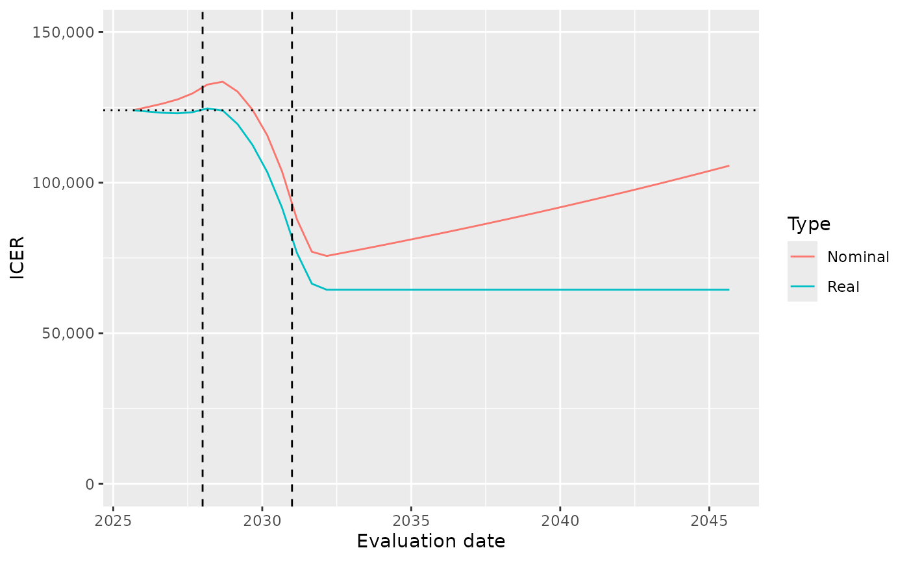

Cost-Effectiveness Applications
Source:vignettes/cost-effectiveness-applications.Rmd
cost-effectiveness-applications.RmdIntroduction
This vignette outlines how to evaluate a cost-effectiveness model in a manner that allows for dynamic pricing and dynamic uptake. Let us consider in turn:
- the decision problem we are modeling through a cost-effectiveness analysis
- dynamic patient uptake
- dynamic pricing
Methods and Assumptions
We wish to evaluate the cost-effectiveness, measured as incremental cost per QALY, of a new intervention compared to the standard of care (SoC). The model is a partitioned survival analysis typical in oncology with three health states: progression-free (PF), progressive disease (PD) and death, with additional assumptions as follows.
General assumptions
- The time horizon is 20 years, a timestep is 1 week, discounting is at 3% per year, with an effective date of calculation is 2025-06-01.
- For SoC, progression-free survival (PFS) is modeled as an exponential distribution with mean of 50 weeks; overall survival (OS) in weeks is modelled according to a lognormal distribution with mean and standard deviation on the log scale as 4 and 1 respectively.
- The effect of the new intervention relative to the SoC is a hazard ratio of 0.5 on PFS and 0.6 on OS.
- Health utility is 0.8 in the PF state and 0.6 in the PD state.
- Drug acquisition costs are $400 and $1500 per week for SoC and the new intervention respectively, incurred throughout a patient’s time in the PF state (treat to progression).
- Drug administration costs are $50 and $75 per week on treatment for SoC and the new intervention respectively.
- Adverse events occur in 0.08% and 0.10% of SoC and new intervention patients per week respectively, while on treatment, at an average cost of $2000 per event.
- Disease management costs are $80 per week in PF and $20 per week in PD.
- Patients receive the treatment of interest (new or SoC) until progression. Subsequent treatment costs are $1200 and $300 per week per patient while in the PD state for SoC and new intervention patients respectively.
Dynamic pricing
Let us suppose the following assumptions concerning pricing:
- Costs are assumed to increases in line with general inflation (2.5% per year), except for effects on drug acquisition costs due to LoEs.
- The date of calculation is 2025-09-01.
- The LoE for the SoC is assumed to occur first, at 2028-01-01, after which there is anticipated to be a 70% reduction in prices over one year.
- The new intervention has an LoE occuring three years later, at 2031-01-01, after which there would be a 50% reduction in prices over one year.
Dynamic uptake
Let us suppose the following assumptions concerning patient uptake. The aim here is to estimate the incidence of patients for whom the decision problem applies, i.e. the patients who would receive the new intervention, were it made available. This will be a function of, but not the same as, disease incidence or prevalence. We assume:
- Only newly incident patients with the cancer being modeled would be eligible for the new treatment. Existing/prevalent patients with the condition would not be eligible.
- The disease incidence is 1 patient per week.
- Among these patients, were the new intervention to be made available, uptake of the new intervention would be expected to rise linearly from 0% to 100% after 2 years.
In this way, uptake would be gradually increasing with time, accounting for disease epidemiology and the share of patients who receive the new intervention.
Implementation
Set-up
First we load the packages necessary for this vignette.
library(dplyr)
library(ggplot2)
library(lubridate)
library(flexsurv)
library(heemod)
library(tidyr)
library(dynamicpv)We code the time constants, time horizon, discount rates and inflation rates first.
# Time constants
days_in_year <- 365.25
days_in_week <- 7
cycle_years <- days_in_week / days_in_year # Duration of a one week cycle in years
# Time horizon (years) and number of cycles
thoz <- 20
Ncycles <- ceiling(thoz/cycle_years)
# Real discounting
disc_year <- 0.03 # Per year
disc_cycle <- (1+disc_year)^(cycle_years) - 1 # Per cycle
# Price inflation
infl_year <- 0.025 # Per year
infl_cycle <- (1+infl_year)^(cycle_years) - 1 # Per cycle
# Nominal discounting
nomdisc_year <- (1+disc_year)*(1+infl_year) - 1
nomdisc_cycle <- (1+nomdisc_year)^(cycle_years) - 1 # Per cycleCost-effectiveness model
The cost-effectiveness model may then be coded in heemod as follows.
# State names
state_names = c(
progression_free = "PF",
progression = "PD",
death = "Death"
)
# PFS distribution for SoC with Exp() distribution and mean of 50 weeks
surv_pfs_soc <- heemod::define_surv_dist(
distribution = "exp",
rate = 1/50
)
# OS distribution for SoC with Lognorm() distribution, meanlog = 4.5, sdlog = 1
# This implies a mean of exp(4 + 0.5 * 1^2) = exp(4.5) = 90 weeks
surv_os_soc <- heemod::define_surv_dist(
distribution = "lnorm",
meanlog = 4,
sdlog = 1
)
# PFS and OS distributions for new
surv_pfs_new <- heemod::apply_hr(surv_pfs_soc, hr=0.5)
surv_os_new <- heemod::apply_hr(surv_os_soc, hr=0.6)
# Define partitioned survival model, soc
psm_soc <- heemod::define_part_surv(
pfs = surv_pfs_soc,
os = surv_os_soc,
terminal_state = FALSE,
state_names = state_names
)
# Define partitioned survival model, soc
psm_new <- heemod::define_part_surv(
pfs = surv_pfs_new,
os = surv_os_new,
terminal_state = FALSE,
state_names = state_names
)
# Parameters
params <- heemod::define_parameters(
# Discount rate
disc = disc_cycle,
# Disease management costs
cman_pf = 80,
cman_pd = 20,
# Drug acquisition costs - the SoC regime only uses SoC drug, the New regime only uses New drug
cdaq_soc = dispatch_strategy(
soc = 400,
new = 0
),
cdaq_new = dispatch_strategy(
soc = 0,
new = 1500
),
# Drug administration costs
cadmin = dispatch_strategy(
soc = 50,
new = 75
),
# Adverse event risks
risk_ae = dispatch_strategy(
soc = 0.08,
new = 0.1
),
# Adverse event average costs
uc_ae = 2000,
# Subsequent treatments
csubs = dispatch_strategy(
soc = 1200,
new = 300
),
# Health state utilities
u_pf = 0.8,
u_pd = 0.6,
)
# Define PF states
state_PF <- heemod::define_state(
# Costs for the state
cost_daq_soc = discount(cdaq_soc, disc_cycle),
cost_daq_new = discount(cdaq_new, disc_cycle),
cost_dadmin = discount(cadmin, disc_cycle),
cost_dman = discount(cman_pf, disc_cycle),
cost_ae = risk_ae * uc_ae,
cost_subs = 0,
cost_total = cost_daq_soc + cost_daq_new + cost_dadmin + cost_dman + cost_ae + cost_subs,
# Health utility, QALYs and life years
pf_year = discount(cycle_years, disc_cycle),
life_year = discount(cycle_years, disc_cycle),
qaly = discount(cycle_years * u_pf, disc_cycle)
)
# Define PD states
state_PD <- heemod::define_state(
# Costs for the state
cost_daq_soc = 0,
cost_daq_new = 0,
cost_dadmin = 0,
cost_dman = discount(cman_pd, disc_cycle),
cost_ae = 0,
cost_subs = discount(csubs, disc_cycle),
cost_total = cost_daq_soc + cost_daq_new + cost_dadmin + cost_dman + cost_ae + cost_subs,
# Health utility, QALYs and life years
pf_year = 0,
life_year = heemod::discount(cycle_years, disc_cycle),
qaly = heemod::discount(cycle_years * u_pd, disc_cycle)
)
# Define Death state
state_Death <- heemod::define_state(
# Costs are zero
cost_daq_soc = 0,
cost_daq_new = 0,
cost_dadmin = 0,
cost_dman = 0,
cost_ae = 0,
cost_subs = 0,
cost_total = cost_daq_soc + cost_daq_new + cost_dadmin + cost_dman + cost_ae + cost_subs,
# Health outcomes are zero
pf_year = 0,
life_year = 0,
qaly = 0,
)
# Define strategy for SoC
strat_soc <- heemod::define_strategy(
transition = psm_soc,
"PF" = state_PF,
"PD" = state_PD,
"Death" = state_Death
)
# Define strategy for new
strat_new <- heemod::define_strategy(
transition = psm_new,
"PF" = state_PF,
"PD" = state_PD,
"Death" = state_Death
)
# Create heemod model
heemodel <- heemod::run_model(
soc = strat_soc,
new = strat_new,
parameters = params,
cycles = Ncycles,
cost = cost_total,
effect = qaly,
init = c(1, 0, 0),
method = "life-table"
)Dynamic pricing
The dynamic pricing assumptions can be codified as follows.
# Dates
# Date of calculation = 1 September 2025
doc <- lubridate::ymd("20250901")
# Date of LOE for SoC = 1 January 2028
loe_soc_start <- lubridate::ymd("20280101")
# Maturation of SoC prices by LOE + 1 year, i.e. = 1 January 2029
loe_soc_end <- lubridate::ymd("20290101")
# Date of LOE for new treatment = 1 January 2031
loe_new_start <- lubridate::ymd("20310101")
# Maturation of new treatment prices by LOE + 1 year, i.e. = 1 January 2032
loe_new_end <- lubridate::ymd("20320101")
# Effect of LoEs on prices once mature
loe_effect_soc <- 0.7
loe_effect_new <- 0.5
# Calculation of weeks since DoC for LoEs and price maturities
wk_start_soc <- floor((loe_soc_start-doc) / lubridate::dweeks(1))
wk_end_soc <- floor((loe_soc_end-doc) / lubridate::dweeks(1))
wk_start_new <- floor((loe_new_start-doc) / lubridate::dweeks(1))
wk_end_new <- floor((loe_new_end-doc) / lubridate::dweeks(1))
# Price maturity times
wk_mature_soc <- wk_end_soc - wk_start_soc
wk_mature_new <- wk_end_new - wk_start_new
# Create a tibble of price indices of length 2T, then pull out columns as needed
# We only need of length T for now, but need of length 2T for future calculations later
pricetib <- tibble(
model_time = 1:(2*Ncycles),
model_year = model_time * cycle_years,
static = 1,
geninfl = (1 + infl_cycle)^(model_time - 1),
loef_soc = pmin(pmax(model_time - wk_start_soc, 0), wk_mature_soc) / wk_mature_soc,
loef_new = pmin(pmax(model_time - wk_start_new, 0), wk_mature_new) / wk_mature_new,
dyn_soc = geninfl * (1 - loe_effect_soc * loef_soc),
dyn_new = geninfl * (1 - loe_effect_new * loef_new)
)
# Price indices required for calculations
prices_oth <- pricetib$geninfl
prices_static <- pricetib$static
prices_dyn_soc <- pricetib$dyn_soc
prices_dyn_new <- pricetib$dyn_newDynamic uptake
The dynamic uptake assumptions can be codified as follows.
# Time for uptake to occur
uptake_years <- 2
# Uptake vector for non-dynamic uptake
uptake_single <- c(1, rep(0, Ncycles-1))
# Uptake vector for dynamic uptake
uptake_weeks <- round(uptake_years / cycle_years)
share_multi <- c((1:uptake_weeks)/uptake_weeks, rep(1, Ncycles-uptake_weeks))
uptake_multi <- rep(1, Ncycles) * share_multiResults
Without dynamic pricing or dynamic uptake
The conventional cost-effectiveness model is static.
heemodel
#> 2 strategies run for 1044 cycles.
#>
#> Initial state counts:
#>
#> PF = 1
#> PD = 0
#> Death = 0
#>
#> Counting method: 'life-table'.
#>
#> Values:
#>
#> cost_daq_soc cost_daq_new cost_dadmin cost_dman cost_ae cost_subs
#> soc 19455.25 0.0 2431.906 4601.624 8000.267 42634.43
#> new 0.00 141997.2 7099.860 8666.132 19999.582 16394.22
#> cost_total pf_year life_year qaly
#> soc 77123.47 0.9321475 1.613053 1.154261
#> new 194156.99 1.8142467 2.861562 2.079786
#>
#> Efficiency frontier:
#>
#> soc -> new
#>
#> Differences:
#>
#> Cost Diff. Effect Diff. ICER Ref.
#> new 117033.5 0.9255249 126451 socLet’s examine each payoff more closely. The next steps extract a payoff vector from the model object. The model/object contains several payoffs accumulated in each timestep, calculated as at time zero:
- drug acquisition cost of the standard of care (cost_daq_soc),
- drug acquisition cost of the new intervention (cost_daq_new),
- cost of drug administration (cost_dadmin),
- cost of disease management (cost_dman),
- cost of treating adverse events (cost_ae),
- cost of subsequent lines of treatment (cost_subs),
- total cost (cost_total),
- progression-free life years (pf_year),
- life years (life_year), and
- QALYs (qaly).
The dynamicpv::get_dynfields() function extracts these
parameters from the heemod model
object, and calculates ‘rolled-up’ values as at the start of each
timestep rather than discounted to time zero. The rolled-up values are
what dynamicpv::dynpv() requires.
# Pull out the payoffs of interest from oncpsm
payoffs <- get_dynfields(
heemodel = heemodel,
payoffs = c("cost_daq_new", "cost_daq_soc", "cost_total", "qaly", "life_year"),
discount = "disc"
) |>
mutate(
model_years = model_time * cycle_years,
# Derive costs other than drug acquisition, as at time zero
cost_nondaq = cost_total - cost_daq_new - cost_daq_soc,
# ... and at the start of each timestep
cost_nondaq_rup = cost_total_rup - cost_daq_new_rup - cost_daq_soc_rup
)
# Create and view dataset for SoC
hemout_soc <- payoffs |> filter(int=="soc")
head(hemout_soc)
#> # A tibble: 6 × 16
#> model_time cost_daq_new cost_daq_soc cost_total qaly life_year int vt
#> <int> <dbl> <dbl> <dbl> <dbl> <dbl> <chr> <dbl>
#> 1 1 0 396. 695. 0.0153 0.0192 soc 1
#> 2 2 0 388. 705. 0.0152 0.0191 soc 0.999
#> 3 3 0 380. 714. 0.0151 0.0191 soc 0.999
#> 4 4 0 372. 721. 0.0150 0.0191 soc 0.998
#> 5 5 0 365. 726. 0.0149 0.0190 soc 0.998
#> 6 6 0 357. 730. 0.0148 0.0189 soc 0.997
#> # ℹ 8 more variables: cost_daq_new_rup <dbl>, cost_daq_soc_rup <dbl>,
#> # cost_total_rup <dbl>, qaly_rup <dbl>, life_year_rup <dbl>,
#> # model_years <dbl>, cost_nondaq <dbl>, cost_nondaq_rup <dbl>
# Create and view dataset for new intervention
hemout_new <- payoffs |> filter(int=="new")
head(hemout_new)
#> # A tibble: 6 × 16
#> model_time cost_daq_new cost_daq_soc cost_total qaly life_year int vt
#> <int> <dbl> <dbl> <dbl> <dbl> <dbl> <chr> <dbl>
#> 1 1 1493. 0 1847. 0.0153 0.0192 new 1
#> 2 2 1477. 0 1831. 0.0153 0.0192 new 0.999
#> 3 3 1461. 0 1815. 0.0152 0.0191 new 0.999
#> 4 4 1446. 0 1799. 0.0152 0.0191 new 0.998
#> 5 5 1431. 0 1783. 0.0151 0.0190 new 0.998
#> 6 6 1416. 0 1766. 0.0150 0.0190 new 0.997
#> # ℹ 8 more variables: cost_daq_new_rup <dbl>, cost_daq_soc_rup <dbl>,
#> # cost_total_rup <dbl>, qaly_rup <dbl>, life_year_rup <dbl>,
#> # model_years <dbl>, cost_nondaq <dbl>, cost_nondaq_rup <dbl>Scenario 1: No dynamic uptake or pricing
With non-dynamic uptake, we use
uptakes=uptake_single=1. Drug acquisition
costs are constant in real terms (prices=prices_static) and
are discounted at the risk-free real rate
(discrate=disc_cycle). Other costs rise in line with
general price inflation (prices=prices_oth) and are
discounted at nominal discount rates
(discrate=nomdisc_cycle). QALYs are not affected by price
inflation (prices=prices_static) and are discounted at the
risk-free real rate (discrate=disc_cycle).
# SOC, costs other than drug acquisition
s1_soc_othcost <- dynamicpv::dynpv(
uptakes = uptake_single,
payoffs = hemout_soc$cost_nondaq_rup,
prices = prices_oth,
discrate = nomdisc_cycle
)
# SOC, drug acquisition costs
s1_soc_daqcost <- dynamicpv::dynpv(
uptakes = uptake_single,
payoffs = hemout_soc$cost_daq_soc_rup,
prices = prices_static,
discrate = disc_cycle
)
# SOC, total costs
s1_soc_cost <- s1_soc_daqcost + s1_soc_othcost
# SOC, QALYs
s1_soc_qaly <- dynamicpv::dynpv(
uptakes = uptake_single,
payoffs = hemout_soc$qaly_rup,
prices = prices_static,
discrate = disc_cycle
)
# New intervention, costs other than drug acquisition
s1_new_othcost <- dynamicpv::dynpv(
uptakes = uptake_single,
payoffs = hemout_new$cost_nondaq_rup,
prices = prices_oth,
discrate = nomdisc_cycle
)
# New intervention, drug acquisition costs
s1_new_daqcost <- dynamicpv::dynpv(
uptakes = uptake_single,
payoffs = hemout_new$cost_daq_new_rup,
prices = prices_static,
discrate = disc_cycle
)
# New intervention, total costs
s1_new_cost <- s1_new_daqcost + s1_new_othcost
# New intervention, QALYs
s1_new_qaly <- dynamicpv::dynpv(
uptakes = uptake_single,
payoffs = hemout_new$qaly_rup,
prices = prices_static,
discrate = disc_cycle
)
# Incremental cost
s1_icost <- s1_new_cost - s1_soc_cost
summary(s1_icost)
#> Summary of Dynamic Pricing and Uptake
#> Number of cohorts: 1044
#> Number of times: 1
#> Total uptake: 0
#> Total present value: 117033.5
#> Mean present value: Inf
# Incremental QALY
s1_iqaly <- s1_new_qaly - s1_soc_qaly
summary(s1_iqaly)
#> Summary of Dynamic Pricing and Uptake
#> Number of cohorts: 1044
#> Number of times: 1
#> Total uptake: 0
#> Total present value: 0.9255249
#> Mean present value: Inf
# ICER
s1_icer <- total(s1_icost) / total(s1_iqaly)
s1_icer
#> [1] 126451These results show that the new intervention is associated with $117,034 incremental costs relative to the standard of care (including $141,997 of drug acquisition costs for the new intervention) and 0.926 incremental QALYs. The cumulative ICER (incremental cost per QALY) is $126,451 per QALY at the 20 year time horizon.
Scenario 2: Dynamic pricing, no dynamic uptake
The costs of drug acquisition in each arm differ in Scenario 2
through applying the relevant dynamic price index
(prices_dyn_soc and prices_dyn_new), with
discounting at nominal rates (discrate = nomdisc_cycle).
Otherwise costs and QALYs are unchanged from Scenario 1.
# SOC, costs other than drug acquisition are unchanged
s2_soc_othcost <- s1_soc_othcost
# SoC, drug acquisition costs
s2_soc_daqcost <- dynamicpv::dynpv(
uptakes = uptake_single,
payoffs = hemout_soc$cost_daq_soc_rup,
prices = prices_dyn_soc,
discrate = nomdisc_cycle
)
# SoC, total costs
s2_soc_cost <- s2_soc_daqcost + s2_soc_othcost
# SoC, QALYs are unchanged
s2_soc_qaly <- s1_soc_qaly
# New intervention, costs other than drug acquisition are unchanged
s2_new_othcost <- s1_new_othcost
# New intervention, drug acquisition costs
s2_new_daqcost <- dynamicpv::dynpv(
uptakes = uptake_single,
payoffs = hemout_new$cost_daq_new_rup,
prices = prices_dyn_new,
discrate = nomdisc_cycle
)
# New intervention, total costs
s2_new_cost <- s2_new_daqcost + s2_new_othcost
# New intervention, QALYs are unchanged
s2_new_qaly <- s1_new_qaly
# Incremental cost
s2_icost <- s2_new_cost - s2_soc_cost
summary(s2_icost)
#> Summary of Dynamic Pricing and Uptake
#> Number of cohorts: 1044
#> Number of times: 1
#> Total uptake: 0
#> Total present value: 114820
#> Mean present value: Inf
# Incremental QALY
s2_iqaly <- s2_new_qaly - s2_soc_qaly
summary(s2_iqaly)
#> Summary of Dynamic Pricing and Uptake
#> Number of cohorts: 1044
#> Number of times: 1
#> Total uptake: 0
#> Total present value: 0.9255249
#> Mean present value: Inf
# ICER
s2_icer <- total(s2_icost) / total(s2_iqaly)
s2_icer
#> [1] 124059.3Under scenario 2, the new intervention has an incremental cost-effectiveness of $124,059 per QALY (incremental costs of $114,820, incremental QALYs of 0.926).
Scenario 3: Dynamic uptake, not dynamic pricing
The calculation for Scenario 3 is the same as for Scenario 1 except
for dynamic uptake, which is handled by setting
uptakes = uptake_multi.
# SOC, costs other than drug acquisition
s3_soc_othcost <- dynamicpv::dynpv(
uptakes = uptake_multi,
payoffs = hemout_soc$cost_nondaq_rup,
prices = prices_oth,
discrate = nomdisc_cycle
)
# SoC, drug acquisition costs
s3_soc_daqcost <- dynamicpv::dynpv(
uptakes = uptake_multi,
payoffs = hemout_soc$cost_daq_soc_rup,
prices = prices_static,
discrate = disc_cycle
)
# SoC, total costs
s3_soc_cost <- s3_soc_daqcost + s3_soc_othcost
# SoC, QALYs
s3_soc_qaly <- dynamicpv::dynpv(
uptakes = uptake_multi,
payoffs = hemout_soc$qaly_rup,
prices = prices_static,
discrate = disc_cycle
)
# New intervention, costs other than drug acquisition
s3_new_othcost <- dynamicpv::dynpv(
uptakes = uptake_multi,
payoffs = hemout_new$cost_nondaq_rup,
prices = prices_oth,
discrate = nomdisc_cycle
)
# New intervention, drug acquisition costs
s3_new_daqcost <- dynamicpv::dynpv(
uptakes = uptake_multi,
payoffs = hemout_new$cost_daq_new_rup,
prices = prices_static,
discrate = disc_cycle
)
# New intervention, total costs
s3_new_cost <- s3_new_daqcost + s3_new_othcost
# New intervention, QALYs
s3_new_qaly <- dynamicpv::dynpv(
uptakes = uptake_multi,
payoffs = hemout_new$qaly_rup,
prices = prices_static,
discrate = disc_cycle
)
# Incremental costs
s3_icost <- s3_new_cost - s3_soc_cost
summary(s3_icost)
#> Summary of Dynamic Pricing and Uptake
#> Number of cohorts: 1044
#> Number of times: 1
#> Total uptake: 0
#> Total present value: 78010854
#> Mean present value: Inf
# Incremental QALYs
s3_iqaly <- s3_new_qaly - s3_soc_qaly
summary(s3_iqaly)
#> Summary of Dynamic Pricing and Uptake
#> Number of cohorts: 1044
#> Number of times: 1
#> Total uptake: 0
#> Total present value: 520.8296
#> Mean present value: Inf
# ICER
s3_icer <- total(s3_icost) / total(s3_iqaly)
s3_icer
#> [1] 149781.9Under scenario 3, the new intervention has an incremental cost-effectiveness of $149,782 per QALY (incremental costs of $78,010,854, incremental QALYs of 521 from a cohort comprising 992 patients).
Scenario 4: Dynamic pricing and uptake
The costs of drug acquisition in each arm differ in Scenario 4 from
Scenario 3 through applying the relevant dynamic price index
(prices_dyn_soc and prices_dyn_new). Otherwise
costs and QALYs are unchanged from Scenario 3.
# SOC, costs other than drug acquisition are unchanged
s4_soc_othcost <- s3_soc_othcost
# SoC, drug acquisition costs
s4_soc_daqcost <- dynamicpv::dynpv(
uptakes = uptake_multi,
payoffs = hemout_soc$cost_daq_soc_rup,
prices = prices_dyn_soc,
discrate = nomdisc_cycle
)
# SoC, total costs
s4_soc_cost <- s4_soc_daqcost + s4_soc_othcost
# SoC, QALYs are unchanged
s4_soc_qaly <- s3_soc_qaly
# New intervention, costs other than drug acquisition are unchanged
s4_new_othcost <- s3_new_othcost
# New intervention, drug acquisition costs
s4_new_daqcost <- dynamicpv::dynpv(
uptakes = uptake_multi,
payoffs = hemout_new$cost_daq_new_rup,
prices = prices_dyn_new,
discrate = nomdisc_cycle
)
# New intervention, total costs
s4_new_cost <- s4_new_daqcost + s4_new_othcost
# New intervention, QALYs
s4_new_qaly <- s3_new_qaly
# Incremental costs
s4_icost <- s4_new_cost - s4_soc_cost
summary(s4_icost)
#> Summary of Dynamic Pricing and Uptake
#> Number of cohorts: 1044
#> Number of times: 1
#> Total uptake: 0
#> Total present value: 49255066
#> Mean present value: Inf
# Incremental QALYs
s4_iqaly <- s4_new_qaly - s4_soc_qaly
summary(s4_iqaly)
#> Summary of Dynamic Pricing and Uptake
#> Number of cohorts: 1044
#> Number of times: 1
#> Total uptake: 0
#> Total present value: 520.8296
#> Mean present value: Inf
# ICER
s4_icer <- total(s4_icost) / total(s4_iqaly)
s4_icer
#> [1] 94570.4Under scenario 4, the new intervention has an incremental cost-effectiveness of $94,570 per QALY (incremental costs of $49,255,066, incremental QALYs of 521 from a cohort comprising 992 patients).
Summary of results
Total costs and QALYs for each scenario are summarized in the table below. The results above are skewed by the fact that some scenarios represent more than one patient cohort. Presenting results per patient, allows easier comparison between the scenarios.
| Scenario 1 | Scenario 2 | Scenario 3 | Scenario 4 | ||
|---|---|---|---|---|---|
| Dynamic pricing? | No | Yes | No | Yes | |
| Dynamic uptake? | No | No | Yes | Yes | |
| Cohort size | 1 | 1 | 992 | 992 | |
| Total costs (cohort) | |||||
| New intervention | 194,157 | 191,248 | 129,401,743 | 91,698,157 | |
| Standard of care | 77,123 | 76,428 | 51,390,888 | 42,443,090 | |
| Incremental | 117,034 | 114,820 | 78,010,854 | 49,255,066 | |
| Total costs (per patient) | |||||
| New intervention | 194,157 | 191,248 | 130,380 | 92,391 | |
| Standard of care | 77,123 | 76,428 | 51,779 | 42,764 | |
| Incremental | 117,034 | 114,820 | 78,600 | 49,627 | |
| Total QALYs (cohort) | |||||
| New intervention | 2.08 | 2.08 | 1,309 | 1,309 | |
| Standard of care | 1.154 | 1.154 | 788 | 788 | |
| Incremental | 0.926 | 0.926 | 521 | 521 | |
| Total QALYs (per patient) | |||||
| New intervention | 2.08 | 2.08 | 1.319 | 1.319 | |
| Standard of care | 1.154 | 1.154 | 0.794 | 0.794 | |
| Incremental | 0.926 | 0.926 | 0.525 | 0.525 | |
| ICER | 126,451 | 124,059 | 149,782 | 94,570 |
Future single cohort ICER
The table above presents the cost-effectiveness results as of the
date of calculation, 2025-09-01. However, it is interesting to explore
how the ICER will change over time, given the expected evolution of
prices. We use dynamicpv::futurepv() to calculate present
values at future times. This function is a wrapper for
dynamicpv::dynpv(). This is the single cohort ICER (no
dynamic uptake) but with dynamic pricing, so corresponds with Scenario 2
from earlier.
First, we calculate the costs at each time of interest. Then we calculate the ICER, given the incremental QALYs we have already observed - and which are immune from pricing effects.
# Times at which to plot ICER
gtimes <- round((0:(2*thoz))/cycle_years/2)
# SOC drug acquisition costs
gc_soc_daq <- gtimes |>
purrr::map_vec(\(l) mean(futurepv(
tzero = l,
payoffs = hemout_soc$cost_daq_soc_rup,
prices = prices_dyn_soc,
discrate = nomdisc_cycle
))
)
# SOC other costs
gc_soc_oth <- gtimes |>
purrr::map_vec(\(l) mean(futurepv(
tzero = l,
payoffs = hemout_soc$cost_nondaq_rup,
prices = prices_oth,
discrate = nomdisc_cycle
))
)
# New drug acquisition costs
gc_new_daq <- gtimes |>
purrr::map_vec(\(l) mean(futurepv(
tzero = l,
payoffs = hemout_new$cost_daq_new_rup,
prices = prices_dyn_new,
discrate = nomdisc_cycle
))
)
# New other costs
gc_new_oth <- gtimes |>
purrr::map_vec(\(l) mean(futurepv(
tzero = l,
payoffs = hemout_new$cost_nondaq_rup,
prices = prices_oth,
discrate = nomdisc_cycle
))
)
# Combine in a tibble
ds <- tibble(
# Time in weeks and years
time_weeks = gtimes,
time_years = time_weeks * cycle_years,
# Evaluation date
evaldate = doc + time_weeks * 7,
# Price/inflation index
pinfl = prices_oth[gtimes + 1],
# Total costs for each intervention
totcost_new = gc_new_daq + gc_new_oth,
totcost_soc = gc_soc_daq + gc_soc_oth,
# Scenario 1/2 QALYs
qaly_soc = total(s1_soc_qaly),
qaly_new = total(s1_new_qaly)
) |>
mutate(
# Incremental cost and QALYs
icost = totcost_new-totcost_soc,
iqaly = qaly_new-qaly_soc,
# Nominal ICER, and real (inflation adjusted) ICER
Nominal = icost/iqaly,
Real = Nominal / pinfl
) |>
# Pivot to long so can be used in a graphic
pivot_longer(
cols = c("Nominal", "Real"),
names_to = "Type",
values_to = "ICER"
)We should check at this point that the ICER we are starting at ($124,059) matches the scenario 2 ICER from earlier ($124,059).
The following plot shows the nominal ICER calculated at different times, given the pricing, LoE and other assumptions. The horizontal dotted line confirms that the initial ICER matches the value from Scenario 2. The vertical dashed lines mark the timings of the LoEs of first the standard of care, and then the new treatment.
# Plot real and nominal present value over time
ggplot(ds,
aes(x = evaldate, y = ICER, color=Type)) +
geom_line() +
labs(x = "Evaluation date") +
geom_hline(yintercept = ds$ICER[1], linetype='dotted') +
geom_vline(xintercept = loe_new_start, linetype='dashed') +
geom_vline(xintercept = loe_soc_start, linetype='dashed') +
scale_y_continuous(
labels = scales::comma,
limits=c(0, 150000)
)
Discussion
The findings for this example model are as follows:
The effect of assuming dynamic pricing rather than flat pricing over time is shown in the difference between results of scenarios 1 and 2. Scenario 1 assumed no increases in drug acquisition costs, but inflationary increases in other costs. Scenario 2 additionally assumed drug prices of the new intervention and SoC comparator would be eroded due to losses of exclusivity. This has a modest impact on costs per patient of the new intervention (reducing from $194,157 to $191,248). Accordingly the ICER reduces from $126,451 to $124,059 per QALY.
The effect of modeling uptake dynamically rather than just the current cohort of patients is shown in the difference between results of scenarios 1 and 3. Dynamic modeling of uptake has the effect of weighting the costs and QALYs per patient in scenario 3 towards a later cohort of patients, where the accumulation of costs and QALYs over the time remaining in the payer’s 20 year time horizon will be less. The incremental costs per patient reduced from $194,157 in scenario 1 to $130,380 in scenario 3, whereas the incremental QALYs reduced from 2.08 to 1.319 per patient. Overall, the ICER increased from $126,451 to $149,782 per QALY.
The effects of dynamic pricing and dynamic uptake are extremely synergistic. Scenario 4 illustrates the effects of both dynamic pricing and cohort modeling. The results per patient are identical to scenario 3, except that the cost per patient of the new intervention reduces from $130,380 to $92,391, due to the impact of dynamic pricing. The ICER in this case is reduced considerably to $94,570 per QALY.
As shown in the Figure, the ICER increases a little at first, as we approach the LoE of the standard of care comparator. After all, a cheaper comparator will increase the incremental cost of the new treatment. However, this is soon dwarfed by the effect of the LoE of the new treatment, which occurs later. This reduces the ICER significantly as the LoE approaches. Thereafter, the ICER is constant in real terms (but increasing with price inflation in nominal terms).